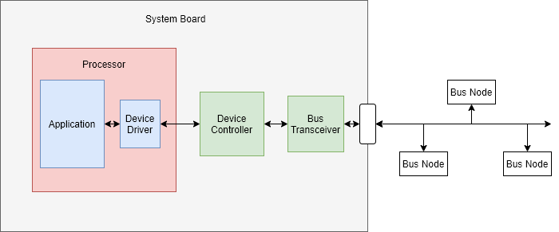
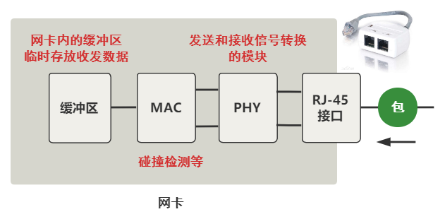

内核是如何接收一个网络包的
一、准备工作
内核版本5.14.14
注册硬中断
以Intel e1000 网卡驱动为例，找到e1000_main.c源码：
static struct pci_driver e1000_driver = {
...
.name = e1000_driver_name, // 驱动名称
.probe = e1000_probe, // 设备插入内核时调用
.remove = e1000_remove, // 设备从内核移除时调用
.shutdown = e1000_shutdown, // 设备关闭时调用
...
};
static int __init e1000_init_module(void)
{
...
// 注册网卡驱动
ret = pci_register_driver(&e1000_driver);
...
}
static void __exit e1000_exit_module(void)
{
// 注销网卡驱动
pci_unregister_driver(&e1000_driver);
}
可以看到probe是关键，那probe什么时候被调用的呢？（很多网上文章说是在call_driver_probe里面调用，其实还没说到底，仔细看会发现函数定义类型不一样）
struct pci_driver {
...
int (*probe)(struct pci_dev *dev, const struct pci_device_id *id); /* New device inserted */
...
};
struct bus_type {
...
int (*probe) (struct device *dev);
...
};
struct device_driver {
...
int (*probe) (struct device *dev);
...
};
那我们继续看pci_register_driver的实现
struct bus_type pci_bus_type = {
...
.name = "pci",
.probe = pci_device_probe,
...
};
int __pci_register_driver(struct pci_driver *drv, struct module *owner,
const char *mod_name)
{
/* initialize common driver fields */
...
drv->driver.bus = &pci_bus_type; // 这一步会设置总线类型
...
spin_lock_init(&drv->dynids.lock);
INIT_LIST_HEAD(&drv->dynids.list);
/* register with core */
return driver_register(&drv->driver);
}
在pci_device_probe -> pci_call_probe -> local_pci_probe ->中找到了：
static long local_pci_probe(void *_ddi)
{
...
pci_dev->driver = pci_drv;
rc = pci_drv->probe(pci_dev, ddi->id);
...
}
所以，网卡驱动probe调用链为：pci_register_driver -> driver_register -> bus_add_driver -> __driver_attach -> driver_probe_device -> really_probe -> call_driver_probe -> bus的probe -> pci_device_probe -> pci_call_probe -> local_pci_probe
这里有必要简单说下，
bus、driver、device的区别：bus：总线（Bus）是指计算机组件间规范化的交换数据（data）的方式，即以一种通用的方式为各组件提供数据传送和控制逻辑。如果说主板（Mother Board）是一座城市，那么总线就像是城市里的公共汽车（bus），能按照固定行车路线，传输来回不停运作的比特（bit）。-- wikipediadriver：驱动程序，提供操作的软件接口。device：设备就是连接在总线上的物理实体。 
那下面接着看probe的具体做了些什么：
static const struct net_device_ops e1000_netdev_ops = {
.ndo_open = e1000_open,
.ndo_stop = e1000_close,
.ndo_start_xmit = e1000_xmit_frame,
.ndo_do_ioctl = e1000_ioctl,
...
};
static int e1000_probe(struct pci_dev *pdev, const struct pci_device_id *ent)
{
...
// 设置net_device_ops
netdev->netdev_ops = &e1000_netdev_ops;
// 注册ethtool实现函数
e1000_set_ethtool_ops(netdev);
// NAPI初始化，注册poll函数（e1000_clean）
netif_napi_add(netdev, &adapter->napi, e1000_clean, 64);
// 获取MAC地址
e1000_read_mac_addr(hw);
// 注册net_device
strcpy(netdev->name, "eth%d");
err = register_netdev(netdev);
...
}
void netif_napi_add(struct net_device *dev, struct napi_struct *napi,
int (*poll)(struct napi_struct *, int), int weight)
{
...
// 注册poll函数
napi->poll = poll;
...
}
上面网卡驱动初始化都完成后，就可以启动网卡了。当启动一个网卡时，net_device_ops中的e1000_open会被调用。
int e1000_open(struct net_device *netdev)
{
...
// 分配RingBuffer，分配RX、TX队列内存，DMA初始化
err = e1000_setup_all_tx_resources(adapter);
err = e1000_setup_all_rx_resources(adapter);
// adapter配置
e1000_configure(adapter);
// 注册中断处理函数（e1000_intr）
err = e1000_request_irq(adapter);
// 启用NAPI
napi_enable(&adapter->napi);
...
}
#define ETH_DATA_LEN 1500 /* Max. octets in payload */
static void e1000_configure_rx(struct e1000_adapter *adapter)
{
u64 rdba;
struct e1000_hw *hw = &adapter->hw;
u32 rdlen, rctl, rxcsum;
// 设置 clean_rx 回调 （后面收包会用到）
if (adapter->netdev->mtu > ETH_DATA_LEN) {
rdlen = adapter->rx_ring[0].count *
sizeof(struct e1000_rx_desc);
adapter->clean_rx = e1000_clean_jumbo_rx_irq;
adapter->alloc_rx_buf = e1000_alloc_jumbo_rx_buffers;
} else {
rdlen = adapter->rx_ring[0].count *
sizeof(struct e1000_rx_desc);
adapter->clean_rx = e1000_clean_rx_irq;
adapter->alloc_rx_buf = e1000_alloc_rx_buffers;
}
}
注册软中断
Linux的软中断都是在专门的内核线程ksoftirqd中进行的。该进程的数量等于机器的核数。
root@ubuntu:~# ps aux | grep ksoft
root 12 0.0 0.0 0 0 ? S 18:16 0:00 [ksoftirqd/0]
root 20 0.0 0.0 0 0 ? S 18:16 0:00 [ksoftirqd/1]
root 26 0.0 0.0 0 0 ? S 18:16 0:00 [ksoftirqd/2]
root 32 0.0 0.0 0 0 ? S 18:16 0:01 [ksoftirqd/3]
系统初始化时，调用spawn_ksoftirqd来创建出ksoftirqd进程。
当ksoftirqd被创建出来以后，它就会进入自己的线程循环函数ksoftirqd和ksoftirqd了。不停地判断有没有软中断需要被处理。
static struct smp_hotplug_thread softirq_threads = {
.store = &ksoftirqd,
.thread_should_run = ksoftirqd_should_run,
.thread_fn = run_ksoftirqd,
.thread_comm = "ksoftirqd/%u",
};
static __init int spawn_ksoftirqd(void)
{
...
BUG_ON(smpboot_register_percpu_thread(&softirq_threads));
return 0;
}
early_initcall(spawn_ksoftirqd);
static int smpboot_thread_fn(void *data)
{
struct smpboot_thread_data *td = data;
struct smp_hotplug_thread *ht = td->ht;
while (1) {
...
if (!ht->thread_should_run(td->cpu)) {
preempt_enable_no_resched();
schedule();
} else {
__set_current_state(TASK_RUNNING);
preempt_enable();
ht->thread_fn(td->cpu);
}
}
}
linux内核通过调用subsys_initcall来初始化各个子系统。网络子系统的初始化阶段会进行注册软中断处理函数。
/*
* The list of packet types we will receive (as opposed to discard)
* and the routines to invoke.
*
* Why 16. Because with 16 the only overlap we get on a hash of the
* low nibble of the protocol value is RARP/SNAP/X.25.
*
* 0800 IP
* 0001 802.3
* 0002 AX.25
* 0004 802.2
* 8035 RARP
* 0005 SNAP
* 0805 X.25
* 0806 ARP
* 8137 IPX
* 0009 Localtalk
* 86DD IPv6
*/
#define PTYPE_HASH_SIZE (16)
struct list_head ptype_base[PTYPE_HASH_SIZE] __read_mostly;
struct list_head ptype_all __read_mostly; /* Taps */
static int __init net_dev_init(void)
{
...
INIT_LIST_HEAD(&ptype_all);
// 初始化hash表
for (i = 0; i < PTYPE_HASH_SIZE; i++)
INIT_LIST_HEAD(&ptype_base[i]);
...
// 为每个CPU都申请一个softnet_data数据结构，sd里面的poll_list等待驱动程序将其poll函数注册进来（后面会说到）
for_each_possible_cpu(i) {
struct softnet_data *sd = &per_cpu(softnet_data, i);
skb_queue_head_init(&sd->input_pkt_queue);
skb_queue_head_init(&sd->process_queue);
INIT_LIST_HEAD(&sd->poll_list);
...
// 后面收包会先收到backlog队列
init_gro_hash(&sd->backlog);
// 设置处理队列包的回调（process_backlog）
sd->backlog.poll = process_backlog;
sd->backlog.weight = weight_p;
}
// 注册发包软中断处理函数
open_softirq(NET_TX_SOFTIRQ, net_tx_action);
// 注册收包软中断处理函数
open_softirq(NET_RX_SOFTIRQ, net_rx_action);
...
}
subsys_initcall(net_dev_init);
// 注册软中断回调函数
void open_softirq(int nr, void (*action)(struct softirq_action *))
{
// 记录到softirq_vec中
softirq_vec[nr].action = action;
}
上面说了内核线程的启动、注册软中断处理函数，下面接着说，内核线程如何处理软中断的。
我们接着看ksoftirqd_should_run、run_ksoftirqd。
#define local_softirq_pending() (__this_cpu_read(local_softirq_pending_ref))
static int ksoftirqd_should_run(unsigned int cpu)
{
return local_softirq_pending();
}
这里看到，仅仅是读取软中断标记。如果在硬中断处理流程中设置了标记（后面在硬中断处理中可以看到），这里肯定能读到。
static void run_ksoftirqd(unsigned int cpu)
{
...
__do_softirq();
...
}
// 根据当前CPU的软中断类型，调用其注册的action方法。
asmlinkage __visible void __softirq_entry __do_softirq(void)
{
set_softirq_pending(0);
h = softirq_vec;
while ((softirq_bit = ffs(pending))) {
h += softirq_bit - 1;
...
h->action(h);
...
h++;
pending >>= softirq_bit;
}
}
这里注意一个细节，硬中断处理中设置软中断标记，和这里判断是否有软中断到达，都是基于当前cpu的。这意味着只要硬中断在哪个CPU上被响应，那么软中断也是在这个CPU上处理的。
如果发现你的linux上软中断CPU消耗都集中在一个核上，做法是调整硬中断的CPU亲和性，来将硬中断打散到不同的CPU核上去。
协议层注册
系统启动的时候，不同的协议会注册不同的处理函数。
static struct packet_type ip_packet_type __read_mostly = {
.type = cpu_to_be16(ETH_P_IP),
.func = ip_rcv,
.list_func = ip_list_rcv,
};
static int __init inet_init(void)
{
// ARP模块初始化
arp_init();
...
// 添加所有的基础协议
if (inet_add_protocol(&icmp_protocol, IPPROTO_ICMP) < 0)
pr_crit("%s: Cannot add ICMP protocol\n", __func__);
if (inet_add_protocol(&udp_protocol, IPPROTO_UDP) < 0)
pr_crit("%s: Cannot add UDP protocol\n", __func__);
if (inet_add_protocol(&tcp_protocol, IPPROTO_TCP) < 0)
pr_crit("%s: Cannot add TCP protocol\n", __func__);
...
// 添加IP协议处理
dev_add_pack(&ip_packet_type);
...
}
fs_initcall(inet_init);
// Add a protocol handler to the networking stack.
void dev_add_pack(struct packet_type *pt)
{
struct list_head *head = ptype_head(pt);
spin_lock(&ptype_lock);
list_add_rcu(&pt->list, head);
spin_unlock(&ptype_lock);
}
static inline struct list_head *ptype_head(const struct packet_type *pt)
{
if (pt->type == htons(ETH_P_ALL))
return pt->dev ? &pt->dev->ptype_all : &ptype_all;
else
return pt->dev ? &pt->dev->ptype_specific :
&ptype_base[ntohs(pt->type) & PTYPE_HASH_MASK];
}
上面可以看到，ip_packet_type被添加到ptype_base[ETH_P_IP]里面。上面也有说过ptype_base的定义和初始化。
类似的，ARP协议处理也被添加进去
static struct packet_type arp_packet_type __read_mostly = {
.type = cpu_to_be16(ETH_P_ARP),
.func = arp_rcv,
};
void __init arp_init(void)
{
...
dev_add_pack(&arp_packet_type);
...
}
当做好以上准备工作后，就可以开始接收数据包了。
二、从网线到网卡

总之这个过程，实质上就是把网线中的高低电平，转换到网卡上的一个缓冲区中存储着。
三、从网卡到内存
数据到达了网卡这个硬件的缓冲区中，现在要把它弄到内存中的缓冲区。

这个过程完全不需要 CPU 参与，只需要 DMA 这个硬件设备，DMA 等网卡的缓冲区有数据到来时，把它拷贝到内存里。

四、硬中断处理
当DMA操作完成后，网卡会向CPU发起一个硬中断，通知CPU有数据到达。
上面我们说了，硬中断处理函数是e1000_intr
static irqreturn_t e1000_intr(int irq, void *data)
{
...
__napi_schedule(&adapter->napi);
...
}
static inline void ____napi_schedule(struct softnet_data *sd, struct napi_struct *napi)
{
...
// 把napi挂到softnet_data链表上
list_add_tail(&napi->poll_list, &sd->poll_list);
// 触发收包软中断
__raise_softirq_irqoff(NET_RX_SOFTIRQ);
...
}
#define or_softirq_pending(x) (__this_cpu_or(local_softirq_pending_ref, (x)))
void __raise_softirq_irqoff(unsigned int nr)
{
...
// 触发软中断（仅仅对变量的一次或运算）
or_softirq_pending(1UL << nr);
}
上面可以看到，硬中断处理过程真的非常短。只是记录了一个寄存器，修改了CPU的poll_list，然后发出软中断。
五、软中断处理
内核线程检测到软中断触发后，会调用注册的net_rx_action函数。
static __latent_entropy void net_rx_action(struct softirq_action *h)
{
// 获取到当前CPU变量 softnet_data
struct softnet_data *sd = this_cpu_ptr(&softnet_data);
// time_limit 和 budget 是用来控制 net_rx_action 主动退出的
// 目的是保证网络包的接收不霸占CPU不放
unsigned long time_limit = jiffies +
usecs_to_jiffies(netdev_budget_usecs);
int budget = netdev_budget;
LIST_HEAD(list);
LIST_HEAD(repoll);
// 更改poll_list前需要把所有硬中断给关了
local_irq_disable();
// 把poll_list链到list上，并把poll_list置空
list_splice_init(&sd->poll_list, &list);
local_irq_enable();
for (;;) {
struct napi_struct *n;
...
n = list_first_entry(&list, struct napi_struct, poll_list);
budget -= napi_poll(n, &repoll);
// 主动退出逻辑
/* If softirq window is exhausted then punt.
* Allow this to run for 2 jiffies since which will allow
* an average latency of 1.5/HZ.
*/
if (unlikely(budget <= 0 ||
time_after_eq(jiffies, time_limit))) {
sd->time_squeeze++;
break;
}
}
...
}
budget 参数可以通过内核参数调整。
net.core.netdev_budget = 300
static int napi_poll(struct napi_struct *n, struct list_head *repoll)
{
bool do_repoll = false;
void *have;
int work;
list_del_init(&n->poll_list);
have = netpoll_poll_lock(n);
work = __napi_poll(n, &do_repoll);
if (do_repoll)
list_add_tail(&n->poll_list, repoll);
netpoll_poll_unlock(have);
return work;
}
static int __napi_poll(struct napi_struct *n, bool *repoll)
{
...
if (test_bit(NAPI_STATE_SCHED, &n->state)) {
// 执行网卡驱动注册的poll函数
work = n->poll(n, weight);
trace_napi_poll(n, work, weight);
}
...
}
上面我们说过，网卡驱动注册的poll函数是e1000_clean
/**
* e1000_clean - NAPI Rx polling callback
* @napi: napi struct containing references to driver info
* @budget: budget given to driver for receive packets
**/
static int e1000_clean(struct napi_struct *napi, int budget)
{
struct e1000_adapter *adapter = container_of(napi, struct e1000_adapter,
napi);
int tx_clean_complete = 0, work_done = 0;
...
// 上面有说，在e1000_open中有注册e1000_clean_rx_irq函数到clean_rx
adapter->clean_rx(adapter, &adapter->rx_ring[0], &work_done, budget);
if (!tx_clean_complete || work_done == budget)
return budget;
...
return work_done;
}
static bool e1000_clean_rx_irq(struct e1000_adapter *adapter,
struct e1000_rx_ring *rx_ring,
int *work_done, int work_to_do)
{
struct e1000_rx_buffer *buffer_info, *next_buffer;
unsigned int i;
i = rx_ring->next_to_clean;
rx_desc = E1000_RX_DESC(*rx_ring, i);
buffer_info = &rx_ring->buffer_info[i];
while (rx_desc->status & E1000_RXD_STAT_DD) {
struct sk_buff *skb;
data = buffer_info->rxbuf.data;
// 生成skb包
skb = e1000_copybreak(adapter, buffer_info, length, data);
if (!skb) {
skb = build_skb(data - E1000_HEADROOM, frag_len);
skb_reserve(skb, E1000_HEADROOM);
buffer_info->rxbuf.data = NULL;
}
process_skb:
/* Receive Checksum Offload */
e1000_rx_checksum(adapter,
(u32)(status) |
((u32)(rx_desc->errors) << 24),
le16_to_cpu(rx_desc->csum), skb);
e1000_receive_skb(adapter, status, rx_desc->special, skb);
}
...
}
static void e1000_receive_skb(struct e1000_adapter *adapter, u8 status,
__le16 vlan, struct sk_buff *skb)
{
...
napi_gro_receive(&adapter->napi, skb);
}
gro_result_t napi_gro_receive(struct napi_struct *napi, struct sk_buff *skb)
{
...
ret = napi_skb_finish(napi, skb, dev_gro_receive(napi, skb));
...
return ret;
}
static gro_result_t napi_skb_finish(struct napi_struct *napi,
struct sk_buff *skb,
gro_result_t ret)
{
switch (ret) {
case GRO_NORMAL:
gro_normal_one(napi, skb, 1);
break;
...
}
}
// 省略中间的函数调用。。
gro_normal_one -> gro_normal_list -> netif_receive_skb_list_internal ->
enqueue_to_backlog
// 入队到backlog
static int enqueue_to_backlog(struct sk_buff *skb, int cpu, unsigned int *qtail)
{
...
qlen = skb_queue_len(&sd->input_pkt_queue);
if (qlen <= netdev_max_backlog && !skb_flow_limit(skb, qlen)) {
if (qlen) {
enqueue:
__skb_queue_tail(&sd->input_pkt_queue, skb);
...
// 入队成功，返回收包成功
return NET_RX_SUCCESS;
}
...
}
drop:
...
// 释放掉skb，返回丢包
kfree_skb(skb);
return NET_RX_DROP;
}
netdev_max_backlog 是可以通过修改内核参数更改的。
net.core.netdev_max_backlog = 1000
上面把生成skb包后，紧接着入队到backlog。下面我们接着数据包出队。
static int process_backlog(struct napi_struct *napi, int quota)
{
...
while (again) {
struct sk_buff *skb;
// skb包从process_queue队列中出队
while ((skb = __skb_dequeue(&sd->process_queue))) {
rcu_read_lock();
// skb包被送往协议栈（__netif_receive_skb往下传递一直到deliver_skb）
__netif_receive_skb(skb);
rcu_read_unlock();
...
}
local_irq_disable();
...
if (skb_queue_empty(&sd->input_pkt_queue)) {
// 如果input_pkt_queue队列为空，则退出流程
napi->state = 0;
again = false;
} else {
// 将input_pkt_queue队列数据放到process_queue队列，并把input_pkt_queue置空
skb_queue_splice_tail_init(&sd->input_pkt_queue,
&sd->process_queue);
}
...
local_irq_enable();
}
...
}
static inline int deliver_skb(struct sk_buff *skb,
struct packet_type *pt_prev,
struct net_device *orig_dev)
{
if (unlikely(skb_orphan_frags_rx(skb, GFP_ATOMIC)))
return -ENOMEM;
refcount_inc(&skb->users);
// 协议层注册的处理函数
return pt_prev->func(skb, skb->dev, pt_prev, orig_dev);
}
如果是IP协议，上面的func就会进入到ip_rcv。
六、协议层处理
netfilter框架就不在这里介绍了，可以看相关章节。
我们接着看数据包经过IP协议层，如何被送到TCP或UDP的
// 调用流程如下：
ip_rcv -> ip_rcv_finish -> dst_input
// 这里涉及路由子系统，netfilter框架中经过路由判决后会决定走local_in还是forward。
static inline int dst_input(struct sk_buff *skb)
{
return INDIRECT_CALL_INET(skb_dst(skb)->input,
ip6_input, ip_local_deliver, skb);
}
如果包是送往本机的，那我们接着看ip_local_deliver,
// 调用流程如下：
ip_local_deliver -> ip_local_deliver_finish -> ip_protocol_deliver_rcu
void ip_protocol_deliver_rcu(struct net *net, struct sk_buff *skb, int protocol)
{
...
// 获取IP协议类型
ipprot = rcu_dereference(inet_protos[protocol]);
if (ipprot) {
...
// 调用对应的协议处理函数（上面的inet_init函数中已经注册过了）
ret = INDIRECT_CALL_2(ipprot->handler, tcp_v4_rcv, udp_rcv, skb);
...
}
...
}
后面可能会经过socket传到应用层，这里就不展开了。